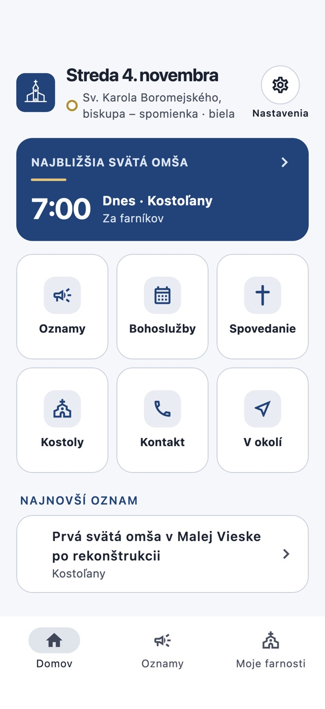
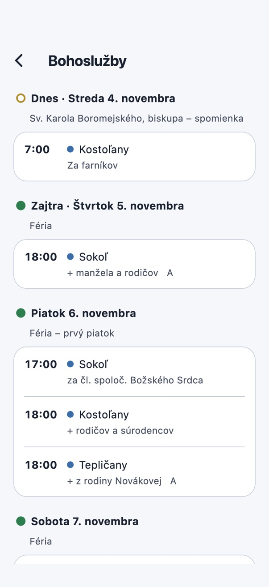
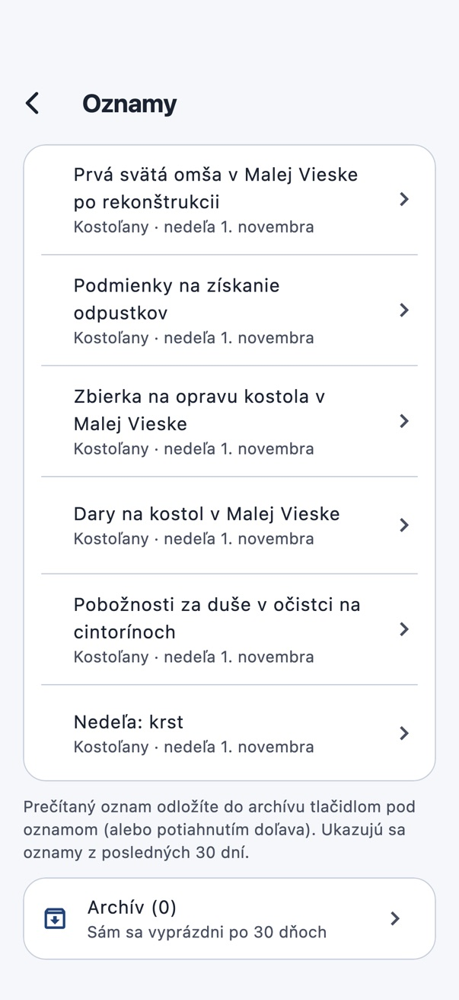
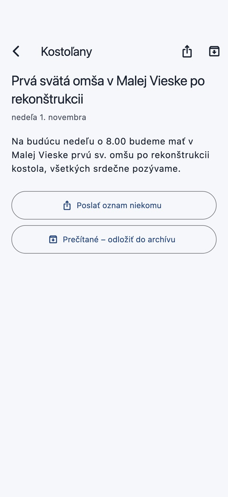
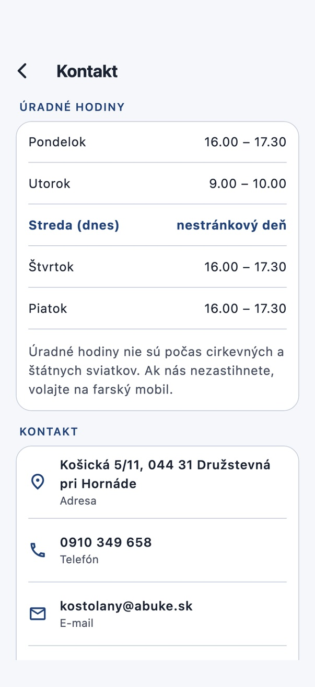

Aplikácia pre farnosti
Vaša farnosť vždy po ruke
Oznamy, časy svätých omší a spovedania a upozornenia z vašej farnosti na jednom mieste. Vyberiete si svoj kostol a appka vám dá vedieť, keď sa niečo zmení.
Čoskoro v App Store a Google Play
- Zadarmo
- Bez reklám
- Bez účtu
- Pre rímskokatolícke aj gréckokatolícke farnosti

Všetko z farnosti v jednej appke
Jednoduchá na ovládanie, s veľkým písmom a veľkými tlačidlami, aby sa v nej vyznal každý.
Oznamy
Farské oznamy hneď po zverejnení, prehľadne a s veľkým písmom.
Bohoslužby a spovedanie
Časy svätých omší a liturgií na celý týždeň, úmysly a kedy sa spovedá.
Upozornenia
Nový oznam, zmena omše alebo mimoriadna udalosť. Vyberiete si, čo chcete dostávať.
Kostoly a v okolí
Viac farností naraz, napríklad doma aj u rodičov, a kde je najbližšia omša v okolí.
Úmysly a otázky
Požiadajte o úmysel svätej omše alebo sa opýtajte kňaza, ak to farnosť ponúka.
Podujatia a spoločenstvá
Púte, stretnutia a správy pre miništrantov či zbor, s prihlásením priamo v appke.
Prehľadná a pokojná
Písmo si zväčšíte podľa seba, večer môžete použiť tmavý režim a na ploche telefónu môžete mať widget s najbližšou omšou.




Pre kňazov a farnosti
Nič nemusíte písať dvakrát
Appka si oznamy a program bohoslužieb zoberie z toho, čo už zverejňujete na webe alebo v PDF, samozrejme len s vaším súhlasom. Pre veriacich je zadarmo a bez reklám.
Chcem zapojiť farnosť- Správa priamo v telefóneOznam, zmena omše či upozornenie farníkom na pár ťuknutí.
- Úmysly bez papierovaniaŽiadosti o úmysly na jednom mieste, milodar ide prevodom priamo na účet farnosti, bez poplatkov.
- Kňaz, kaplán aj poverení farníciKaždý dostane presne tie práva, ktoré mu kňaz pridelí.
Bez účtu a bez sledovania
Na čítanie oznamov a bohoslužieb sa nemusíte nikde prihlasovať. Vaše farnosti a nastavenia sú uložené len vo vašom telefóne. Žiadne reklamy a žiadne predávanie údajov.

Vyskúšajte aj Rosario
Modlitebná appka od toho istého autora: svätý ruženec, novény, litánie a ďalšie modlitby. Zadarmo, bez reklám a funguje aj bez internetu.